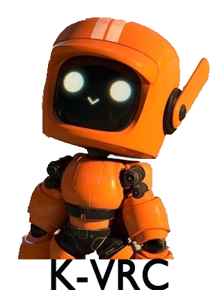
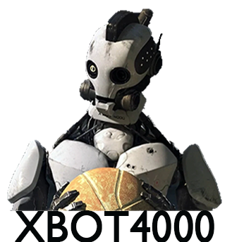
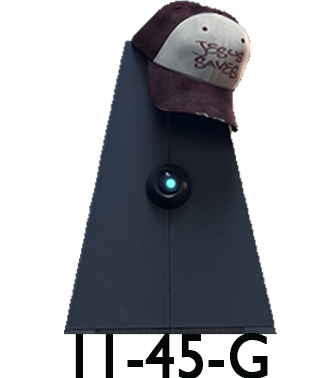

K-VRC is a diminutive orange-painted robot, with a screen face that projects human-like emotive faces according to his mood. He has two white stripes that are slightly worn out on his head, running from the bill to the back of his head. He also has two antennae on the side of his head which he can control himself. K-VRC has an object on his back resembling a backpack.
XBOT is a prominently white robot with black accents. His head resembles that of a skull with pegs keeping his jaw in place. Around his neck is covering that resembles the original XBOT 3, the covering reads “XBOT 4000.” XBOT has various damages, a scratch running down his left eye (which may explain why his other eye wasn’t there in the first place) and multiple bullet holes.


11-45-G's chassis is a square-based pyramid and she has a single eye. She is sassy, yet formal. She could be most described as "real." 11-45-G is voiced by the text to speech program, Kendra.